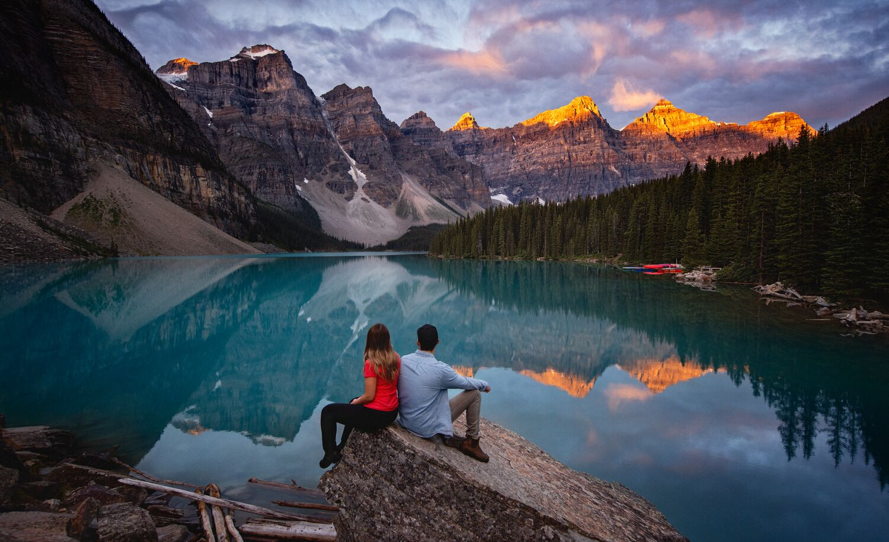
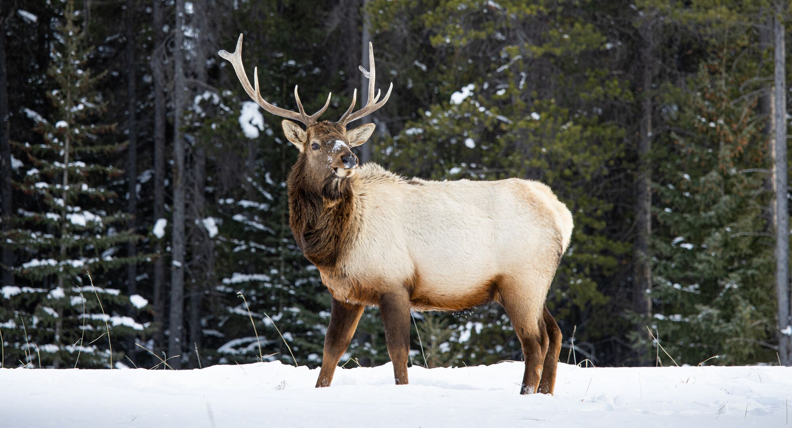
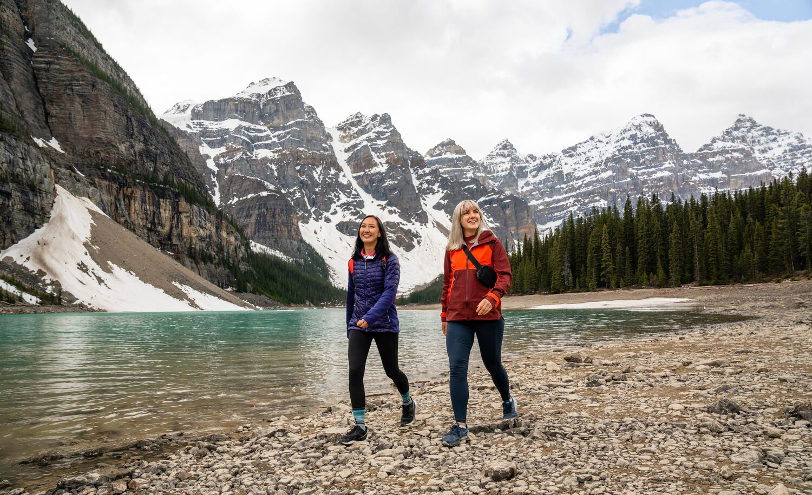
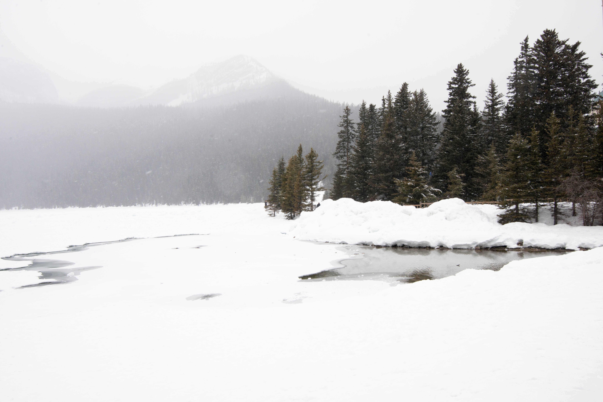
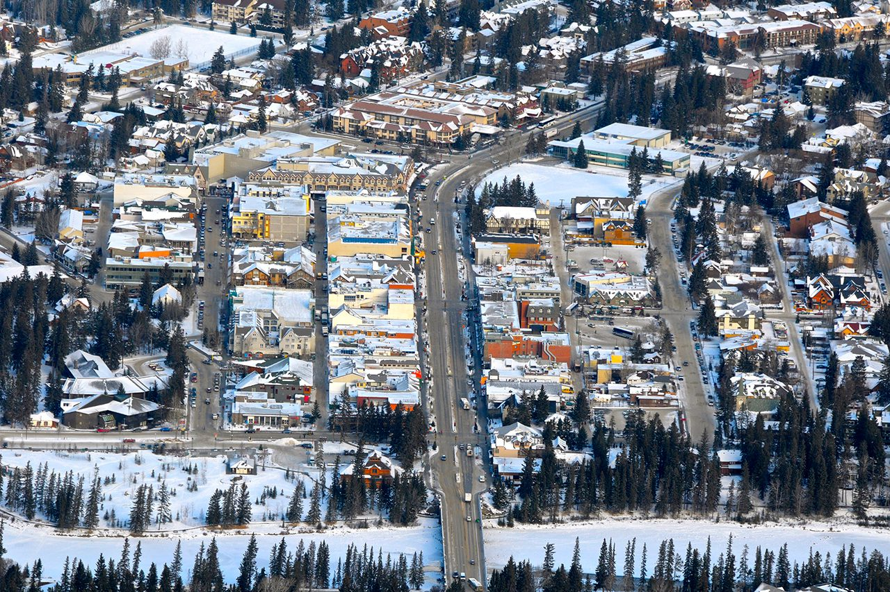

Galeria de Imagens
Conheça algumas das paisagens mais deslumbrantes do Parque Nacional de Banff. Cada imagem conta uma história de beleza natural, aventura e serenidade.
Lake Louise, com suas águas azul-turquesa cercadas por montanhas cobertas de neve, é um dos cartões-postais mais famosos de Banff. Perfeito para canoagem no verão e esqui no inverno.
O deslumbrante Moraine Lake ao pôr do sol. As dez montanhas ao fundo refletem nas águas calmas, criando uma das vistas mais fotografadas do Canadá.
A vida selvagem é uma das atrações de Banff. Ver um alce caminhando calmamente pelas florestas é uma experiência comum e inesquecível.
Caminhar por trilhas cobertas de neve é uma atividade mágica no inverno de Banff. O parque oferece opções para todos os níveis de aventura.
Durante o inverno, o parque se transforma em um verdadeiro conto de fadas, com florestas de pinheiros cobertos de neve e silêncio absoluto.
Vista aérea revela a grandiosidade do parque: lagos, rios, florestas e picos montanhosos se espalham por quilômetros, formando uma das paisagens mais impressionantes do planeta.